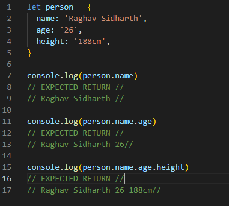
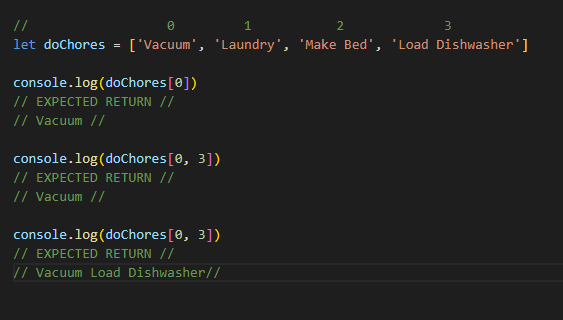
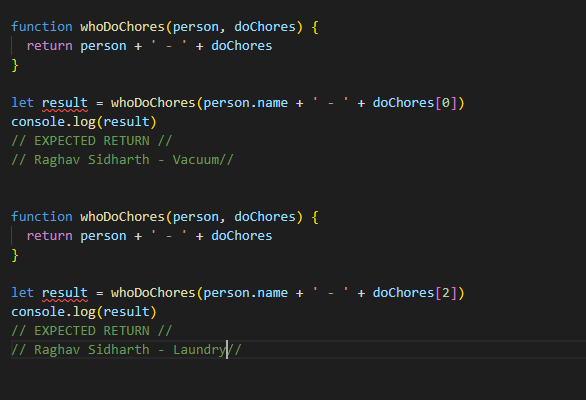

Introduction
If HTML, CSS, and JavaScript were a movie franchise, they’d be the Fast and Furious franchise. HTML would be 2 Fast 2 Furious, serviceable but dull. CSS would be Fast and Furious Tokyo Drift, which manipulates the built-up fanbase of the previous movies but oozes style. JavaScript would be Hobbs & Shaw, too complicated and avoidable. But they’d all be nothing without the DOM. Get it? No? I’ll see myself out.
The DOM
The DOM or the Document Object Model is a tree of nodes created by the browser, it is a structured representation of your HTML document. JavaScript can be used to manipulate virtually everything in the DOM. The DOM is a Web API, an Application Programming Interface that uses written JavaScript as its primary programming language. While many other programming languages can be built to utilise the DOM, JavaScript is the most common. While HTML and CSS are the languages of the web, the DOM provides us with a way to manipulate elements using JavaScript. The window object is the browser, and the document object is the entire HTML document, and everything branching off it is each HTML parent element and its child element. The parent and child elements are what we can manipulate with JavaScript. Tags, Classes, and IDs are the most common way to call and manipulate code. With CSS, we use Classes and IDs to style elements; we can use these and JavaScript to have each aspect provide more functionality or collect information beyond just styling.
Control Flow & Loops
Primarily JavaScript code is executed top to bottom, line by line. Control flow allows our program to decide which code is executed and when. JavaScript contains certain conditional statements and loops that enable us to control the flow making our projects more dynamic and interactive. Conditional statements check if certain conditions are true or false. In the case of a true condition, it will run Code X; if false, it will run Code Y. Loops, as the word suggests, allow us to perform repetitive tasks such as compiling lists or actioning new code for each piece of data. Conditional Statements can be thought of as yes or no statements, such as should I go to bed at a reasonable time or play video games? Both outcomes have different conditions, and each have a different outcome. Loops can be thought of as ordering off a menu in a restaurant, you have a list of potential dishes to buy, and you choose which sounds the best; adding more spice or extra fries are some things you can do to alter the meal.
Objects & Arrays
Objects and Arrays are quite similar; they both hold data points for us to access and manipulate. However, the way we access this data differs between the two. Objects hold data in a key-value pair, the key is the name of the data point, and the value is the data point itself. The way we access objects is the dot method. First, we define which Object we want to access, and then we define the key nested inside the Object we need, which should provide us with the value we need. Below is an example.
Example Code used to define an Object
Arrays do not use the key-value pair method for their data point. Instead, they are listed as an index of data points. Let’s say we have a list of chores to do. We would first define chores and list everything we had to do within the list. As with everything JavaScript, accessing the index (list of chores) is not the same as a conventional list where we start with 1, 2, 3, 4. We begin our count at 0, 1, 2, 3. If we wanted to vacuum first, we would want to access index 0, as that is the first value in our list. Below is an example of our chores array.
Example Code used to define an Array
Functions
Let’s say I wanted to assign a chore to myself, and I wanted to use the object containing my name and select a chore from the array. To do this, I could write a function that selects my name from the Object and selects a task from Array. Functions allow us to access and display different pieces of data together or will enable us to manipulate that data using Conditional Statements or randomly select items using Loops. Below is a simple example of a Function selecting my name and assigning me a task.
Example Code used for creating a Function
Conclusion
In combination with the DOM, HTML and CSS, JavaScript is a powerful tool for helping build more dynamic and interactive websites. Objects, Arrays, Functions, Conditionals and Loops provide a plethora of options for us to make our websites unique, it is on us to take advantage of them. Throughout this week, I struggled to grasp certain concepts, but as I continue to practice, this will, like any other skill, became second nature. I hope this blog post has been informative and entertaining!